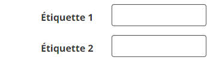
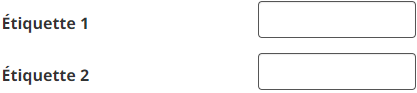

Rendez vos formulaires plus compréhensibles en positionnant les étiquettes des champs de formulaire là où l’utilisateur s’y attend visuellement : au-dessus du champ ou à gauche du champ, aligné à droite. Les étiquettes des boutons radio et des cases à cocher sont placées après le champ.
Le Guide de style de la BOEW – Étiquettes de formulaire privilégie cette disposition. Les utilisateurs peuvent traiter l’information deux fois plus rapidement que les étiquettes alignées à gauche. Les étiquettes sont placées au-dessus des champs du formulaire.
L'exemple commence
L'exemple finit
Le Guide de style de la BOEW privilégie cette disposition lorsqu’il faut conserver l’espace vertical. Les étiquettes sont positionnées à gauche des champs du formulaire et alignées à droite.

Cette disposition positionne les étiquettes loin des commandes. Il peut être difficile de les afficher côte à côte à l’écran si l’on grossit de texte, ce qui oblige à utiliser le défilement horizontal.
